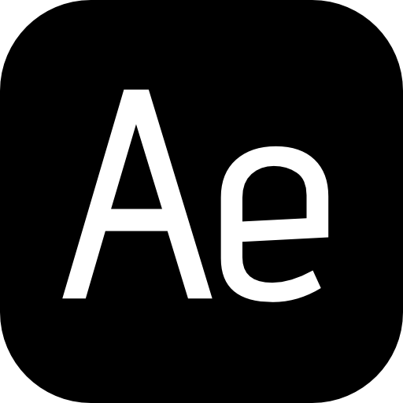
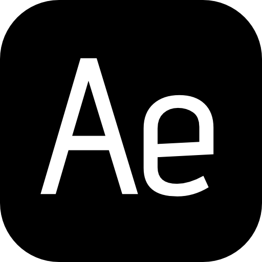

Présentation
Je m'appelle Flavie Dussaillant et j'ai 19 ans. Etudiante en première année de DUT MMI (Métiers du multimédia et de l'internet), je me passione pour la création de sites web et plus particulièrement la partie développement web. J'apprécie réaliser le codage à partir d'une maquette, mettre en forme les idées. Ayant déja fait deux ans de licence MIASHS (Mathématiques et informatiques appliquées aux sciences humaines et sociales) j'ai acquis des bases en HTML, CSS, PHP et SQL. Je suis également en train de me former au JavaScript.
J'ai pu m'initier au design au travers de différents ateliers qui m'ont permis d'acquérir des compétences dans l'utilisation de logiciels type Photoshop, Illustrator, After Effects ou encore Adobe XD pour la réalisation de maquette.
Je suis également passionnée par l'anglais, une langue que je travaille dans le but de devenir bilingue afin de voyager et de pouvoir commmuniquer avec une multitude de personne.


 
